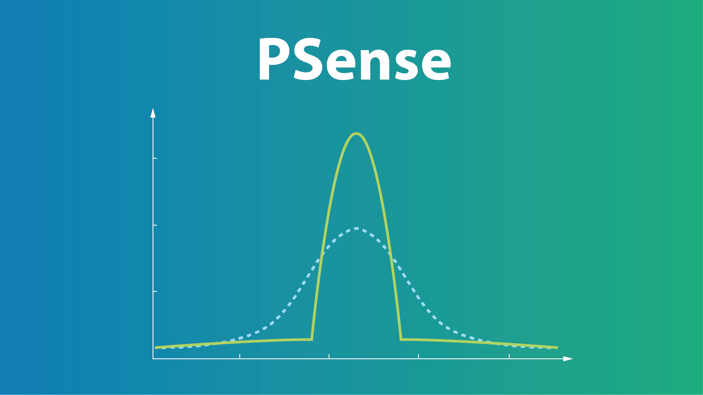

-
PSense (PSense.info)
-
PSense is the first system for automated symbolic analysis of sensitivity in probabilistic programs.
It automatically evaluates the convergence of posterior distribution with interference in prior distribution. PSense measures the posterior change via statistical distances including expectation distance, Kolmogorov–Smirnov statistic, total variation distance, and Kullback–Leibler divergence. - Py Read more
-
PSense is the first system for automated symbolic analysis of sensitivity in probabilistic programs.